Core didactic principles for teaching Open Research
Prerequisites
Before completing this session, please carefully read about the prerequisites.
| Prerequisite | Description | Where to find this |
|---|---|---|
| Familiarity with Open Research concepts and practices | Examples: Replication crisis, open access, R, version control, preregistration, etc. | Click here to get familiar with Open Research first |
Presenter Notes: These are the presenter notes. You will find a script for the presenter for every slide. In presentation mode, your audience will not be able to see these presenter notes, they are only visible to the presenter.
This session assumes a basic familiarity with common Open Science concepts and practices. You do not need to be an expert, but you should have at least seen or used some of these concepts before. Examples include: replication crisis, R for data analysis and reproducible workflows; Quarto for reproducible documents; Git and GitHub for version control and collaboration, preregistration to document hypotheses and analysis plans in advance, Open Access publishing and broader transparency practices. If some of these terms are new, you are encouraged to review the introductory Open Science materials linked on the slide before continuing. The goal is simply to ensure everyone shares a common base vocabulary so the workshop can focus on learning how to teach about Open Science rather than Open Science itself.
Instructor Notes: There are also instructor notes. For some slides, there will be pedagogical tips, suggestions for activities and troubleshooting tips for issues your audience might run into. You can find these notes underneath the presenter notes.
Before you get started on this session with your audience, you need to ensure that the audience fulfills these criteria. Also outline any essential prerequisites (software, tools, other submodules etc.) here. Accessibility Tips: Where applicable, this is a space to add any tips you may have to facilitate the accessibility of your slides and activities.
Getting started!
How much teaching experience do you have?
- Workshops, peer training, (guest) lectures, seminars, lab presentations etc. on open research topics
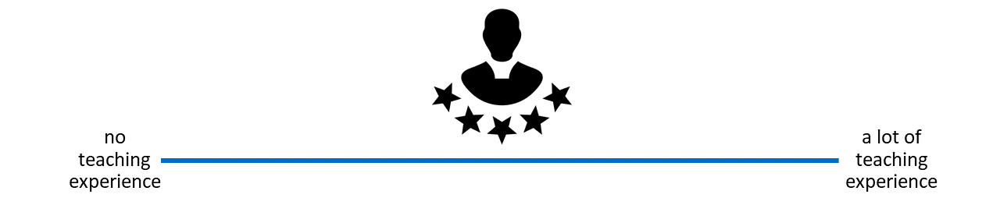
Instructor Notes: For in-person learners: Get people to stand along an imaginary line across the room based on how much teaching experience they have. For online learners: Ask them to indicate experience on the screen. Pick out several people on either end of the spectrum and have them explain their teaching experience. Next, pick some people around the middle and have them explain and compare their experiences. Involve your audience as early as possible, so that they pay attention in case they unexpectedly get called upon.
How much have you already thought about didactics?
- If and when you teach about open research, do you or would you consider didactic elements in you design and/or teaching style..?
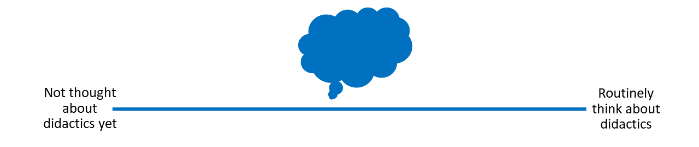
Presenter Notes: Next, let us think a little more about “didactics” or “pedagogy”. If and when you teach, how often do you think about didactics? What do you connect with that term?
Instructor Notes: For in-person learners: Get people to stand along an imaginary line across the room based on how much they think about didactics. For online learners: Ask them to indicate their experience on the screen. Pick out several people on either end of the spectrum and have them explain their connection with didactics. Next, pick some people around the middle and have them explain and compare their connection with didactics. Involve your audience as early as possible, so that they pay attention in case they unexpectedly get called upon.
How big are your teaching/training audiences?
- i.e., what is the average group size you teach in open research? (< 5 people = very small, > 100 people = very large)
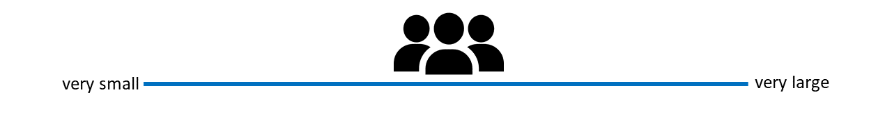
Presenter Notes: Finally, how big are your training audiences? How many people are in the room with you, virtually or in person? What kind of group would this be?
Instructor Notes: For in-person learners: Get people to stand along an imaginary line across the room based on how large their teaching audiences are. For online learners: Ask them to indicate their audience size on the screen. Pick out several people on either end of the spectrum and have them explain their audience. Next, pick some people around the middle and have them explain and compare their audiences in terms of size. Involve your audience as early as possible, so that they pay attention in case they unexpectedly get called upon.
Survey time!
Which of the following concepts or skills do you feel most confident about in relation to didactics and teaching? (Select all that apply)
Considering the learner’s prior knowledge in the learning process
Constructivism
Constructive alignment
Mental model of skills acquisition
Formulating clear learning objectives
None of the above
What is your level of familiarity with constructive alignment?
I have never heard of it before.
I have heard of it but have never implemented it in my teaching.
I have a basic working definition in mind and sometimes implement it in my teaching.
I am very familiar and have routinely applied this framework in my teaching.
What is your level of familiarity with the three learning domains (cognitive, affective and psychomotor)?
I have never heard of them before.
I have heard of them but have never considered them in my teaching.
I have a basic understanding and sometimes implement them in my teaching.
I am very familiar and have routinely applied them in my teaching.
Discussion of survey results
What do we see in the results?
Presenter Notes: Let us have a look at these results.
Instructor Notes: Briefly examine the answers given to each question interactively with the group. Use visuals from the survey to highlight specific answers.
Accessibility Tip: Have people work in pairs if someone did not bring their phone/does not have a phone. This survey also cannot be completed in an asynchronous setting.
Today’s session journey
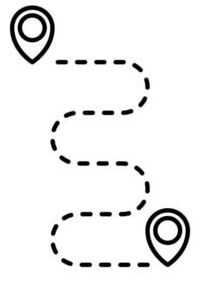
From
I am not sure what good teaching in open research involves…
to
I feel more confident that I can pass on my knowledge of open research to my learners using evidence-based didactic methods.
Presenter Notes: Before we start, I would like to give you an overview of where we are going today. We will discuss this a little more later, but maybe some of you are here thinking, hm, I am unsure what it really means to do “good” teaching of open research topics. By the end of today, the plan is to boost your confidence in terms of your teaching skills and guide you step-by-step towards a great level of confidence, that you can pass your knowledge of open research on to novice learners through evidence-based practice.
Instructor Notes: It is important to provide the overall vision of this session so that learners understand where they are headed in relation to where they are at in terms of how they feel about this topic.
Key terms and definitions
Some terms we will come across today…
- Constructivism:
- Constructive alignment:
- Learning objectives:
- Bloom’s taxonomy:
Presenter Notes: Before we go further, I want to briefly show you the key concepts that will underpin today’s session. These concepts may not make sense to you at this point. Broadly speaking, these concepts are closely related and together provide a useful foundation for thinking about effective teaching and learning design.
Instructor Notes: If time allows, add an interactive activity here. Base yourself on conceptual change theory and examine existing concepts in relation to some key terms via a poll or survey. Re-examine the formation of new concepts at the end of the lesson.
Key terms and definitions
Some terms we will come across today…
- Constructivism: The notion that learners actively build their own understanding of the world rather than absorbing information passively (Sjøberg, 2010).
- Constructive alignment: A teaching approach in which learning objectives, teaching activities, and assessment tasks are aligned so that learners actively construct knowledge and skills (Biggs, 1996).
- Learning objectives: Describe what learners should be able to do after instruction and should specify the intended performance, conditions, and criteria for success.
- Bloom’s taxonomy: A framework for classifying levels of learning and cognitive skills (Bloom et al., 1964), organized from lower-order thinking skills (e.g., remembering and understanding to higher-order skills (analyzing, evaluating).
Presenter Notes: Today’s goal is to get to know these concepts in depth, so that at the end of the session you will have come to learn what each one of them entails in more detail.
Instructor Notes: Emphasize that knowledge of these concepts is not required at this point, and that you will get back to these definitions towards the end of the class.
Covered in this session
- What is learning?
- Constructivism
- Constructive alignment
- Learning domains and levels of knowledge: Bloom’s taxonomy
- Formulating learning objectives
Presenter Notes: This session focuses on key didactic concepts. We will begin with defining what learning is, before discussing concepts and theoretical frameworks such as constructivism, constructive alignment, learning domains, including Bloom’s taxonomy and how to formulate clear and concise learning objectives.
Learning objectives
At the end of this session, you will…
- Remember basic didactic concepts as the foundation for learning success
- Explain and compare how knowledge can be organized depending on the level of expertise
- Evaluate the alignment between learning objectives, assessment types and teaching activities
- Formulate concrete learning objectives according to specific learning domains for real-world content
Presenter Notes: These are the main learning objectives for today’s session. First, you should be able to understand some basic didactic concepts that support effective learning and teaching.
Second, you will analyze how knowledge can be structured differently depending on the learner’s level of expertise, for example, how novices and experts organize information in different ways.
Third, you will evaluate whether learning objectives and assessment methods are actually aligned and why this is important. In other words, does the assessment really measure the kind of learning we want students to achieve?
Finally, you will formulate your own learning objectives using authentic examples and applying the principle of constructive alignment.
Notice that I have highlighted the verbs in bold, we will come back to this later in this session.
What is didactics?
Origins in Ancient Greek
| Greek | Transliteration | Meaning |
|---|---|---|
| διδάσκω | didáskō | to teach; to instruct; to show; to indicate |
| διδακτός | didaktos | taught |
| διδακτικός | didaktikos | apt to teach; able to teach |
Presenter Notes: Before we define didactics in an educational context, it’s helpful to look at where the word comes from. It has its roots in Ancient Greek. The verb didáskō means to teach, to instruct, or to show. The adjective didaktos means taught, while didaktikos refers to someone who is able or apt to teach.
Today, this definition has expanded a little, as we will see next.
Didactics …
“…is the science of learning and teaching in general”
(Dolch, 1967)
“…includes teaching and learning strategies […] referring to the design, programming, elaboration and formulation of learning contents in verbal or written form.”
(Casasola Rivera, 2020)
Presenter Notes: Within the realm of school pedagogics, didactics consists in planning and organizing successful processes of students’ learning. According to Dolch’s (1967) seminal definition, didactics is the science of learning and teaching in general. This definition was later expanded to specifically include teaching and learning strategies connnected to the design and formulation of learning contents.
Didactics …
“… encompasses questions about the selection of knowledge, teaching methods, and how learning takes place in different contexts. It can be seen as the planning, implementation, and analysis of teaching, with a particular focus on why certain objectives, content, and methods are chosen.”
Presenter Notes: This definition of didactics by Stockholm University also captures this concept well. Didactics is the art and science of teaching and learning. It is a field within education that seeks to answer three central questions: What should be taught, how should it be taught, and why should it be taught? Didactics encompasses questions about how learning takes place in different contexts. It can be seen as the planning, implementation, and analysis of teaching, with a particular focus on why certain goals, content, and methods are chosen.
Here we have an important key point: the instructors choice of content and methods, and what learners learn. You can view didactics as a framework in which knowledge and skills are not passively presented, but understood and retained in a carefully designed context.
Your turn! What is learning?
What do you connect with this concept? First thoughts? Assumptions? Expectations?
Presenter Notes: A natural follow-up question from didactics: What is learning to you? How would you define it? What expectations or assumptions come with it?
Instructor Notes: Use an interactive tool such as a wordcloud generator for this to engage your learners. Keep in mind that your learners may have very different educational, cultural, or professional backgrounds, which will shape how they define learning. Moreover, because the question is personal and open-ended, learners need to feel comfortable sharing ideas without fear of being judged or “wrong.” Importantly, use this as an opportunity to understand what learners prior conceptualization of this process is.
What is learning?
“…a process that leads to change, which occurs as a result of experience and increases the potential for improved performance and future learning”
Presenter Notes: Pulling together our discussion from before, this definition from Lovett et al. (2023) and Ambrose et al. shifts the focus from learning as information being presented to learning as a process that leads to change.
Simply being exposed to information is not enough; learners need to actively engage with it.
Importantly, learning also increases the potential for improved performance and future learning, building capacity for continued growth.
Overall, this aligns with what in educational sciences is known as constructivism, which emphasizes active engagement, experience, and developing understanding over time rather than passively receiving information.
Instructor Notes: This slide is a good moment to go back to the previous activity whereby learners were thinking about their existing concepts of “learning” and compare and integrate some of the ideas that were put forward by learners with this definition.
What is learning?
- Learning does not happen in a vacuum.
The learning context matters!- New ideas are interpreted through the lens of what learners already know
- Learners are not empty “vessels” to be filled
Presenter Notes: Learning does not happen in a vacuum, but the context in which it happens matters. Also, learners see new skills and new knowledge through the lens of what they already know. It is also not the case that knowledge and new skills can somehow be transmitted from the teacher or the instructor to the learner.
What this means in practice is that learners are not “empty vessels” waiting to be filled with information, but their context and their prior knowledge has to be taken into accoount. Prior knowledge therefore plays a central role in how new information is understood, and sometimes it can even support learning, or get in the way if existing ideas conflict with new ones.
What is learning?
- Learning does not happen in a vacuum.
The learning context matters!- New ideas are interpreted through the lens of what learners already know
- Learners are not empty “vessels” to be filled
Constructivism: Learning is not passively received, but actively built and shaped by prior knowledge and the learning context.
Presenter Notes: The idea that learning is not simply “being transmitted” from an instructor to learners, but more as something that learners actively achieve is captured by constructivism. Constructivism views learning as an active process shaped by prior knowledge and the learning context.
Instructor Notes: Check for understanding here, this is a key point of today’s session.
The importance of prior knowledge
- Knowledge = facts, concepts, beliefs, values, models, perceptions, attitudes …
Prior knowledge … can help or hinder learning!
- Can be accurate, complete and appropriate for context
- Can be inaccurate, incomplete or inappropriate for context
Presenter Notes: As we just heard, prior knowledge plays an important role in constructivism. But also we know that not everything we know is true or complete. Knowledge, here defined as facts, concepts, beliefs, values, models, perceptions and attitudes, may be complete or appropriate or a context, or may be incomplete or inappropriate.
For example, I could have the “belief” that research published in open access journals means that it is lower quality compared to research published in journals with a high impact factor such as Nature. When I now encounter Open Access publishing, say someone tells me that my paper would fit well in this open access journal, I may reject the idea. The information I might be missing here is in essence that research quality depends on methodological rigor and peer review, not paywalls or access restrictions. Within a constructivist view, I would integrate this piece of information with my existing belief to form a more complete and accurate model. This process of intergration is what ultimately will make me move towards becoming an expert.
We will also talk more about assessing prior knowledge in the following sessions.
Instructor Notes: Idea for adding an interactive element: Ask if someone in the audience can think of another example where prior knowledge might be interfering with the learning process in the context of Open Science.
Your turn! What is an expert?
What does being an expert mean?
What is something that you are an expert in?
How does your experience with a topic differ when you are an expert compared to when you are not an expert?
Presenter Notes: An important question to ask at this point is what “being an expert” actually means. Please take a few moments to think about these three questions for yourselves. We will then share your thoughts in the larger group. Take 3 minutes for this exercise.
Instructor Notes: For the discussion round: When reviewing the answers, you will find that the expert experience amounts to much more than just knowing more facts in your learners. What makes an expert? The answer is that experts have more connections among pieces of knowledge that help them think and problem-solve quickly; more “short-cuts”, if you will.
Idea for a group activity: Replace the individual work with work in pairs. Use the think-pair-share method (Mundelsee & Jurkowski, 2021): Think for two minutes for yourself, collect your thoughts with a partner for two minutes, then we discuss in the large group for two minutes.
A model of skills acquisition
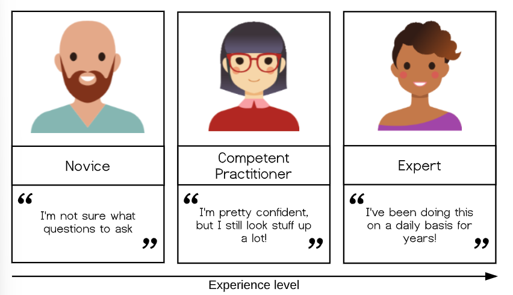
Presenter Notes: With increasing experience level, we move from one type of learner and mental model to another. Simplified, you could look at the types ot learners in terms of novice, competent practitioner, and expert. Here, the differences between these levels of learners can be summarized as starting from: unsure what questions to ask to I know something, but have to look up things to I am super experienced at this stage and basically do not have to think anymore. Let me give you examples for each type of learner:
Novice: Someone who does not know what they do not know, i.e., they do not yet know what the key ideas in the domain are or how they relate. Novices may have difficulty formulating questions, or may ask questions that seem irrelevant or off-topic as they rely on prior knowledge, without knowing what is or is not related yet.
Competent practitioner: Someone who has enough understanding for everyday purposes. They will not know all the details of how something works and their understanding may not be entirely accurate, but it is sufficient for completing normal tasks with normal effort under normal circumstances.
Expert: Someone who can easily handle typical situations and those that are out of the ordinary.
Note that how a person feels about their skill level is not included in these definitions! You may or may not consider yourself an expert in a particular subject, but may nonetheless function at that level in certain contexts.
Next, we will briefly explore the nature of “knowledge” through a concept that helps us differentiate between novices and competent practitioners in a more useful and visual way. This, in turn, will have implications for how we teach.
The organization of (prior) knowledge
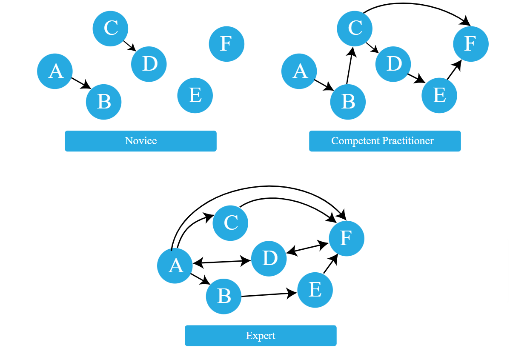
Presenter Notes: How could we visualize this increasing expertise? We could think if it in terms of connectivity between nodes, representing facts, and relationships representing links.
A novice may have a smaller number of nodes, i.e., less facts, and fewer connections between nodes. They may not know what questions to ask because important nodes or facts and links between them are missing. Conclusions drawn by others may therefore not be obvious.
A competent practitioner has a mental model with more notes and more connections between them. They would be able to draw conclusions by going from A to B to C and reason that therefore F has to make sense. They would know what questions to ask and be able to evaluate their work.
An expert has a densely populated and connected mental model that is especially good for problem solving. They quickly connect concepts that others may not see as being related. They would see connections between topics that others cannot see, and are able to go straight from one node to another without making any detours. They would also be able to take different perspectives for solving a problem. They may have difficulty explaining how they are thinking to others, this is called the expert awareness gap.
Example: A mental model of acquiring Open Access skills
| Level | Can do✅ | Cannot (yet) do❌ |
|---|---|---|
| Novice learners | Recognize that Open Access and publishing licenses exist | Identify different publishing licenses or explain their effects on authors and readers |
| Competent practitioners | Knows which “default licenses” are a good choice for most typical cases | Explain specific details of licences or handle “untypical” licensing cases |
| Experts | Strategically select and apply Open Access routes (Gold, Green, Diamond); choose Creative Commons licenses based on reuse goals; support and train others | — |
Presenter Notes: Taking Open Access skills as an example.
A novice learner in a Open Access workshop might never have heard of the Green Open Access model, and therefore may have no understanding of how it affects both the authors of academic papers as well as the readers of papers.
A competent practitioner in the context of an Open Access workshop might be able to check funder’s requirements, knows that different licences exist and can make a choice between “default” licenses, but might not know specific details about each licence and cannot make a suitable licensing choice for egde cases.
An expert publishes perhaps strategically across gold, green and diamond open access routes. Selects and applies different Creative Commons licenses based on reuse goals. Trains others in Open Access practices and institutional policy. Consults on unusual situations, e.g., checks embargo policies and copyright, recommends alternative journals, meaning that they adapt and apply the knowledge and skills flexibly depending on the situation.
Your turn! Sketching mental models
- Pick a topic from open research (different from open access).
- Sketch out the mental model of a novice in comparison to a competent practitioner and/or an expert.
- Provide at least two concrete examples of how the organization of knowledge differs among these types of learners.
Presenter Notes: Let us compare these mental models across the different types of learners with a concrete example. With your neighbor, think of an open science topic of your choice, not open access since we already had a few examples related to this. Sketch out the mental model of a novice in comparison to a competent practitioner and an expert and provide at least two concrete examples of how the organization of knowledge differs among these types of learners. Write down your thoughts over the next 8 minutes.
Instructor Notes: Give learners 8-10 minutes for this exercise. Collect at least one example and discuss in the big groupfor another 2-3 minutes.
Recap
- Didactics = planning and organizing successful processes of learners’ learning
- Learning = learners actively construct knowledge through prior knowledge and context rather than passively receive information (constructivism)
- With increasing expertise mental models of specific skills become more connected
- Effective teaching builds on learners’ existing knowledge and supports their progression from novice to competent practitioner to expert
Presenter Notes: Let us briefly recap what we have learned so far:
- Didactics focuses on planning and organizing teaching to support meaningful learning outcomes.
Learning is active: learners construct understanding by connecting new information to prior knowledge, experiences, beliefs, and mental models. The learning context and activities also influence learning.
Mental models develop with expertise: novices have limited and fragmented knowledge structures; competent practitioners have functional structures for everyday problem solving; experts have highly connected models that support complex problem solving and flexible application of knowledge.
Effective teaching starts from learners’ existing knowledge and designs experiences that help them progress from novice to competent practitioner and ultimately toward expertise.
What would help you organize your knowledge?
Is there something that you are currently learning how to do?
Can you identify things that would help you with organizing your mental model during a workshop?
Think (3 min)
- For yourself: Collect some thoughts for yourself.
Pair (4 min)
- Discuss your
thoughts with your neighbor.
Presenter Notes: Now that we have talked about mental models, next we want to talk about things that could help us move from novice learners to experts. Think about something that you are currently learning or learned how to do. What helps you with organizing your knowledge, beliefs, prior skills, etc. in your mental model, for example in the context of a workshop or course? Think back about things that you encountered in workshops or courses, or even things you have seen during this session. Write down thoughts for yourself (3 mins). Then discuss with your neighbor (4 mins). We will then discuss in the larger group (4 mins).
Instructor Notes: Ask for interaction from the audience or make it an individual activity. If there are no volunteers, pick a group yourself and ask for additional contributions Allow for approx. 12 minutes for this exercise.
Enhancing the organization of knowledge as an instructor
Some strategies …
- Provide learners with a big picture or outline of your workshop/course
- Clearly lay out expectations or objectives for a session
- Create opportunities to discover learners’ prior knowledge
- Make connections between concepts explicit
- Encourage learners to make these connections themselves (sorting tasks, concept maps)
- Monitor learners’ work for problems in their knowledge organization or mental model, e.g., add assessment tasks or progress trackers
- Provide direction through clear learning objectives
Presenter Notes: Some strategies could be:
Provide the Big Picture: Give learners a clear overview of the workshop or course structure. Tell them what is expecting them, how it fits with the rest of the teaching context and what they are working towards.
Communicate expectations: Clearly communicate the session’s objectives and what learners are expected to achieve.
Focus on discovering more about prior knowledge: Use activities or quiz questions to uncover what learners already know.
Make connections visible: Explicitly link related concepts and encourage learners to identify connections themselves through activities such as sorting or concept mapping.
Monitor learning progress: Check learners’ progress to identify gaps or problems in how they organize and understand knowledge. This can be supported through small assessment tasks or structured feedback that make learners’ thinking visible over time.
Formulate learning objectives: Use clear objectives to guide learners and keep their learning focused.
Instructor Notes: Refer back to the answers from your learners from the previous task.
Where are you (as the instructor) going?
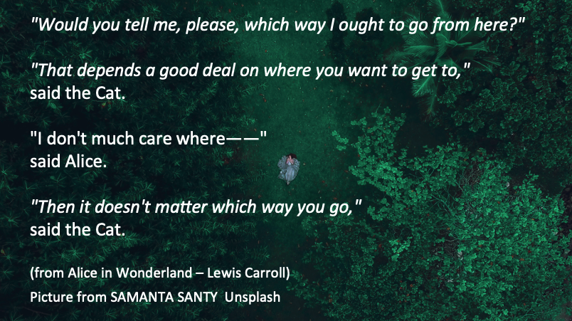
Presenter Notes: Connected to the last point on the previous slide, we are coming to another core didactic principle besides prior knowledge, constructivism, mental models and constructive alignment, namely setting learning objectives.
These quotes here represent the famous conversation between Alice and the Cheshire Cat in Alice in Wonderland. Just as Alice cannot choose the right path without knowing where she wants to go, instructors cannot teach effectively without clear learning objectives.
Clear objectives provide direction and intentionality, making them especially important in Open Science, a field that can sometimes seem abstract or ideological to learners.
Instructor Notes: Emphasize the importance of clear learning objectives in the context of Open Science. Clear learning objectives create the direction that allows open science education to move from awareness toward genuine cultural and practical change in research, which is what is currently (desperately perhaps) needed.
Learning objectives: A definition
“… describes what learners should be able to do after instruction and should specify the intended performance, conditions, and criteria for success.”
Presenter Notes: When we talk about learning objectives, we are referring to more than simply describing what content a teacher will cover. A learning objective describes what learners should be able to do after an intervention, or a teaching activity. According to Mager and colleagues, well-formulated objectives specify three important elements: the intended performance, what learners should demonstrate; the conditions under which this performance takes place; and the criteria for success, how we determine whether the learning goal has been achieved.
“Hierarchy” of learning objectives
What is the general objective of this course?
What are specific individual learning objectives within the course?
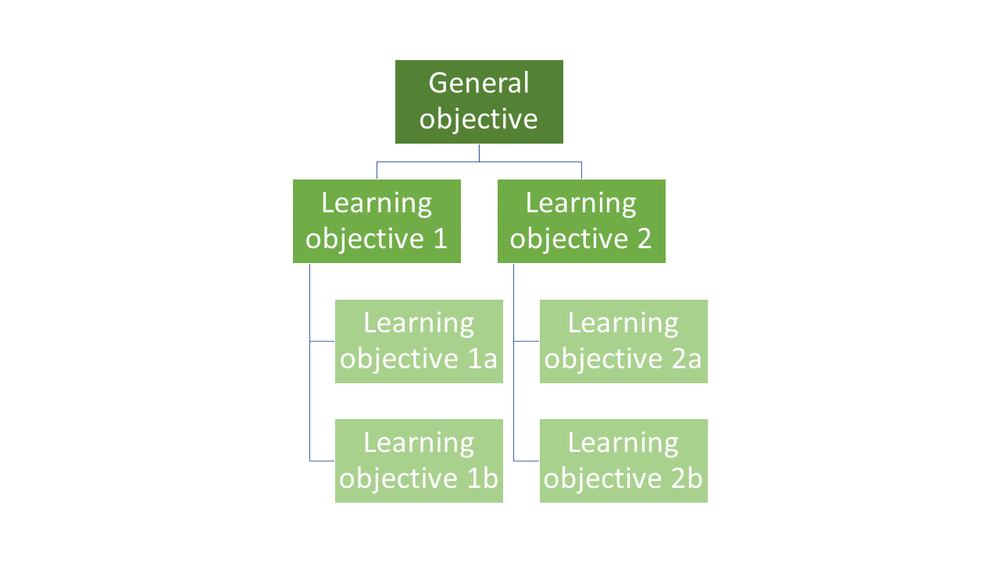
Presenter Notes: Generally speaking, the instructor needs to formulate general, designated and specific learning objectives, as shown in this learning objectives hierarchy.
- General objectives; What are the learning objectives for a course as a whole (e.g. producing transparent and reproducible research)
- Designated objectives: What are the learning objectives for a specific subject area (e.g. use FAIR data principles when organizing and publishing research data)
- Specific objectives: What are the learning objectives for a learning unit (e.g., upload a dataset to an open repository with appropriate metadata)
When preparing a teaching unit, it is important to gain an overview of the location of the learning objectives within this hierarchy to be pursued. Each learning objective is embedded in preceding and subsequent learning objectives. In order to reach the next level of learning objectives, it is necessary for the learning success that the foundation of the lower levels has been laid.
Constructive alignment
Focus on learning objectives: what do we want our learners to achieve?
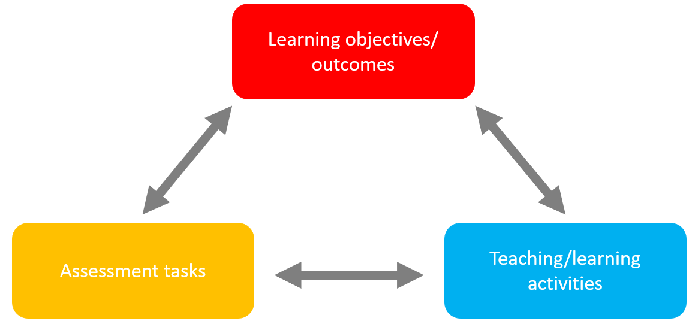
Presenter Notes: As mentioned before, clearly laying out expectations and what you want your learners to achieve for a given workshop is key to help with the organization of the mental model. Constructive alignment provides a clear framework for this. It means ensuring that three core elements of teaching, namely learning objectives/ outcomes, teaching/learning activities, and assessment tasks work together and are aligned with each other. If there is any misalignment, it can confuse learners or make the learning process less effective.
In constructive alignment, we start with the outcomes we intend learners to learn, and align teaching and assessment to those outcomes. The outcome statements contain a learning activity and typically a verb says what the relevant learning activities are that the learners need to undertake in order to obtain the intended learning outcome.
Learning is constructed by what activities the learners carry out; learning is about what your learners do, not about what instructors do. Likewise, assessment is about how well learners achieve the intended outcomes, not about how well learners report back to us what we have told them or what they have read’ (Biggs n.d.).
Constructive alignment
Example in an Open Research context
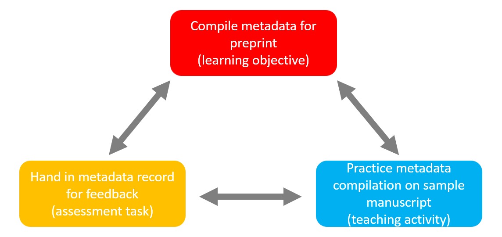
Presenter Notes: For example, in an open research context, say that at the end of the session, you want your learners to independently prepare metadata for a paper they wrote in a previous session for it to be published as a preprint. For this, it would be unhelpful if you only had a learning activity during you session where learners need to describe what a preprint is. What would be a more aligned teaching activity would be to have them practice to compile metadata from a sample manuscript and extract information such as title, authors, abstract, keywords, subject categories etc.
Instructor Notes: Ideas for interactive elements: Ask if someone in your audience has already heard about this concept. Ask to provide examples.
Your turn! Matching learning objectives and assessment types
On the following slide, match each learning objective with an assessment task and reflect the following:
- Why does the assessment task fit the specific learning objective?
- Which teaching activities can you think of that would align with the learning objective and the corresponding assessment task?
Presenter Notes: For this next exercise, I would like for you to match the assessment task with a given learning objective. We will learn more about learning objectives and how to formulate them later. For now, focus on the alignment aspect: does the learning objective match with the assessment task? Work in pairs. Take 8 minutes for this activity.
Practical activity
| Learning objective | Assessment task |
|---|---|
| A: Create a reproducible research pipeline | 1: Hand in a brief essay on Green open access along with two ethical benefits and two challenges |
| B: Apply FAIR data principles to a dataset | 2: Generate a GitHub project and add project documentation (README) |
| C: Analyze reproducibility issues in published studies | 3: Create a metadata record that is machine-readable |
| D: Understand ethical implications of open access | 4: Write a critical review of the methods section of an open access paper |
Instructor Notes: Discussion of solutions in the plenum and potential discussions. The solutions are: - A2 - B3 - C4 - D1
Formulating learning objectives
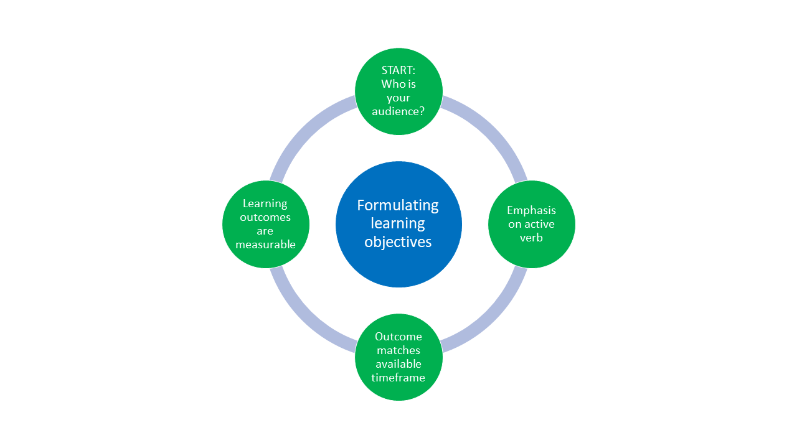
Presenter Notes: Let’s talk about the formulation of learning objectives, which is visualized here. We need to first start with: who are we teaching? Next, the verbs matter! Pick them wisely in an active tense. Third, match the assessment task to your learning objective and make sure it fits the timeframe you have. Fourth, ensure the learning objective is measurable.
Luckily, there is a framework that can help us with this even more.
Three domains of learning
| Learning domain | Learning focus |
|---|---|
| Cognitive | Knowledge or thinking skills |
| Affective | Growth in feelings or emotional areas (attitude or self), values |
| Psychomotor | Manual or physical skills, change in behaviors |
Presenter Notes: Now, let’s say we want to define our learning objectives, and we know where in the hierarchy we want to begin.
We need to be more specific in what we want our learners to learn. A useful framework is to divide learning objectives into three domains. The first domain is the cognitive domain, which focuses on knowledge and thinking. The second domain is the affective domain, which focuses on feelings, attitudes, values, and personal growth. The third domain is the psychomotor domain, which focuses on physical or technical skills and behavioral change. All three are important in the context of Open Research.
Cognitive domain
Learning is focused on expanding or building up knowledge and thinking skills as a learning outcome
Widely implemented in education and typically connected to Bloom’s taxonomy
Example:
- Learning objective: Learners will be able to analyze how open science practices improve research transparency and reproducibility
- Teaching activity: Evaluation and comparisons of reproducible and non-reproducible research workflows or published studies in groups
- Assessment task: Group presentation discussing strengths, limitations, and transparency of selected research practices or publications
Presenter Notes: In the cognitive domain, building knolledge and thinking skills is the primary objective. This framework was first conceptualized by Bloom (Bloom 1956) and is what we typically mean by Bloom’s taxonomy (Bloom et al., 1964). It is an empirical model for describing and classifying the cognitive skills that learners should have mastered at the end of a course or session.
Example from Open Science: The learning objective focuses on analysis, requiring learners to critically examine how Open Science practices support transparency and reproducibility. This involves comparing, evaluating, and interpreting research processes. The teaching activity supports this by having learners compare real research workflows from papers, such as a traditional analysis pipeline with one using version control, preregistration, or shared data. They identify differences in transparency and reproducibility. The assessment is a group presentation in which learners explain the strengths and limitations of different practices and justify their evaluation using evidence, while developing collaborative reasoning.
Cognitive domain
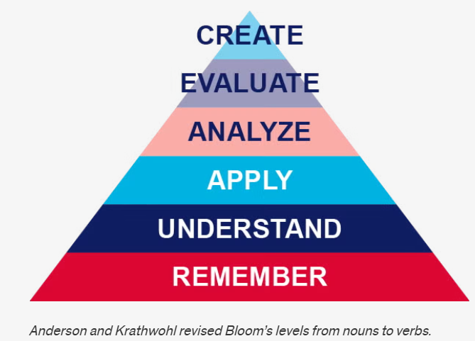
Presenter Notes: What you see is the pyramid of learning objective verbs by Anderson and Krathwohl (Anderson & Krathwohl, 2001) who changed the taxonomy from nouns to verbs. It organizes learning objectives into a hierarchy of cognitive processes. It is often shown as a pyramid because it moves from simpler thinking skills at the base to more complex, higher-order thinking at the top.
At the Remember level, learners recall basic facts and definitions. For example, they might remember what the acronym FAIR data stands for without applying FAIR data principles themselves.
At the Understand level, learners explain concepts in their own words. For instance, they might describe why open science improves transparency and reproducibility, or summarize what problems in research the reproducibility crisis highlights.
At the Apply level, learners use knowledge in a concrete situation. An example would be a learner implementing open science practices, such as preregistering a simple experiment.
At the Analyze level, learners break information into parts and examine relationships. For example, they might compare an open access paper with a traditionally published paper to identify differences in reproducibility.
At the Evaluate level, learners make judgments based on criteria. In open science, this could involve critically assessing whether a published study’s open data and materials are sufficient for replication.
At the Create level, learners produce new work by combining knowledge in original ways. For example, they might design a fully open research project with preregistration, open materials, reproducible code, and a public dataset.
Affective domain
Learning is focused on identifying and developing attitudes and values of learners as learning outcome
Difficult to measure directly, but can be assessed through observable behaviors (e.g., appreciation, showing commitment, awareness of nuances)
Example:
- Learning objective: Learners will actively engage with differing views on the pros and cons of preregistration by asking clarifying questions and incorporating at least one alternative viewpoint into their own arguments
- Teaching activity: Learners participate in a panel discussion in which they argue either the benefits or the limitations of preregistration in scientific research.
- Assessment task: Learners write a reflection essay in which they summarize the arguments presented during the discussion and reflect on how considering both the advantages and disadvantages of preregistration influenced their own perspective on open science practices.
Presenter Notes: The affective domain was first published in 1964 by Krathwohl et al. (1964). It focuses on attitudes and values as learning outcomes. Learners become increasingly self-reliant and internally motivated as they progress through its levels. Affective objectives can be difficult to articulate and assess, but they can be observed through behaviors such as appreciating alternative perspectives, engaging thoughtfully in discussion, asking questions, and recognizing complexity. These outcomes are often closely linked to deeper thinking and lifelong learning.
In this example, the learning objective is not simply for learners to know what preregistration is, but for them to actively engage with differing viewpoints about its advantages and disadvantages. Learners are expected to ask clarifying questions and incorporate alternative perspectives into their own arguments, demonstrating openness and reflective thinking.
The teaching activity supports this objective through a panel discussion where learners argue either the benefits or the limitations of preregistration in scientific research. This encourages perspective-taking and respectful engagement with viewpoints they may or may not personally agree with.
Finally, the assessment task is a reflection essay. Here, learners summarize the different arguments discussed in class and reflect on how engaging with both sides of the debate influenced their own perspective on preregistration and open science practices. This reflective component is central to assessing affective learning because it reveals how learners process, evaluate, and potentially revise their own attitudes and values.
Affective domain
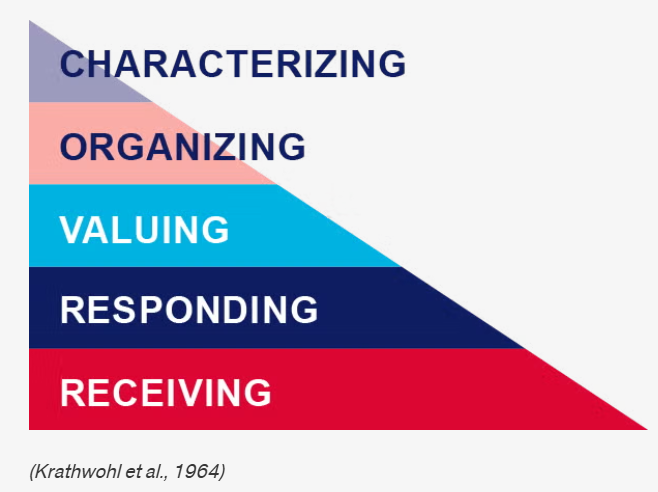
Presenter Notes: The affective domain contains five levels, from lowest to highest:
- Receiving: Willing to listen and receive knowledge.
- Responding: Actively participates and engages in knowledge transfer.
- Valuing: Finds value and worth in one’s learning with motivation to continue.
- Organizing: Integrates and compares values, resolves conflict between these values, and orders them according to priorities.
- Characterizing: Creates a value system that controls behavior. The behavior is pervasive, consistent, predictable, and characteristic of the learner.
Psychomotor domain
Learning is focused on implementing, expanding and building physical skills and behaviors, .e.g., through physical movement, coordination and motor skills as learning outcomes (e.g., measured in terms of speed, precision or technical execution)
Example:
- Learning objective: Learners will accurately upload, document, and share a research dataset in an open repository using appropriate metadata and licensing practices.
- Teaching activity: Hands-on workshop where learners practice preparing metadata, selecting appropriate licenses and uploading to an open repository.
- Assessment task: Each learner independently uploads a dataset and accompanying documentation to a repository with a suitable license.
Presenter Notes: The psychomotor domain focuses on building physical skills and behaviors as outcome. Bloom and his colleagues did not create subcategories for skills in the psychomotor domain, but other educators did, see Dave (1970), Harrow (1972) and Simpson (1985) and other (Simpson 1966, 1972). The psychomotor domain includes physical movement, coordination, and motor skills. Development of these skills requires practice and is measured in terms of speed, precision, distance, procedures, or technical execution.
A straightforward example could be the following: The learning objective is for learners to accurately perform CPR using correct hand placement and rhythm. This emphasizes not only knowing the steps of CPR cognitively, but being able to physically carry them out correctly in a practical situation.
The teaching activity involves learners practicing CPR on mannequins while receiving immediate feedback. This hands-on practice is essential in the psychomotor domain because physical skills improve through repeated performance, correction, and refinement of technique.
For Open Science, it is a little harder to find a good example. Let’s take correctly uploading and documenting a dataset using appropriate metadata and licensing. The teaching activity provides guided, practical experience with preparing datasets and using an open repository. The assessment then evaluates learners’ ability to independently carry out these technical tasks accurately and correctly.
Psychomotor domain
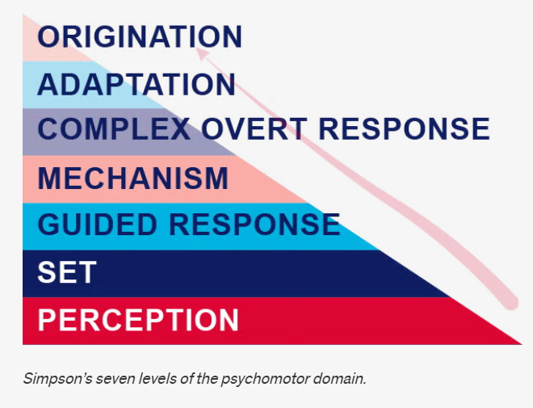
Presenter Notes: The learning pyramid in the psychomotor domain according to Simpson’s version of the psychomotor domain has the following seven levels:
- Perception: Use sensory cues to guide actions or movements.
- Set: Demonstrates a readiness (physically, mentally, emotionally, and spiritually) to take action to perform the task or objective. (NOTE: This level of the Psychomotor domain is closely related to the “Responding to phenomena” level of the Affective domain).
- Guided response: Knows steps required to complete the task or objective and learns through trial and error by practicing.
- Mechanism: Performs task or objective in a somewhat confident, proficient, and habitual manner.
- Complex overt response: Performs task or objective in a confident, proficient, and habitual manner. Expert level, high proficiency and performs with accuracy.
- Adaptation: Performs task or objective and can modify actions to account for new or problematic situations.
- Origination: Create new procedures and solutions to approach various situations.
–
Recap: Learning objectives within learning domains
| cognitive | affective | psychomotor |
|---|---|---|
| origination | ||
| create | adaptation | |
| evaluate | characterizing | complex overt response |
| analyze | organizing | mechanism |
| apply | valuing | guided response |
| understand | responding | set |
| remember | receiving | perception |
Presenter Notes: Let’s recap: Bloom’s taxonomy is a hierarchical model used for classifying learning objectives by levels of complexity and specificity. Bloom’s taxonomy was created to outline and clarify how learners acquire new knowledge and skills. Though the original intention of the taxonomy was to serve as an assessment tool, Bloom’s taxonomy is effective in helping instructors identify clear learning objectives as well as create purposeful learning activities and instructional materials.
There are three learning domains:
Cognitive: knowledge or thinking
Affective: growth in feelings or emotional areas (attitude or self)
Psychomotor: manual or physical skills
Your turn! Designing assessment tasks
You are tasked to design a course module on Open Research practices and would like to include a lesson on open access publishing.
Design one assessment task and define one observable metric of successfully achieving the learning objective for each learning domain below.
Cognitive domain: Learners will be able to compare different open access publishing models, e.g., Gold, Green and Diamond Open Access and critically assess their advantages and limitations.
Affective domain: Learners will critically reflect on the benefits and challenges of open access publishing and demonstrate openness toward differing perspectives on accessibility and publication costs.
Psychomotor domain: Learners will accurately upload a manuscript to an open access repository and correctly apply metadata and an appropriate license
Presenter Notes: In pairs, design one assessment task for each learning objective (cognitive, affective, psychomotor). For each assessment, specify:
an appropriate assessment method (e.g., checklist, rubric)
at least one observable criterion that demonstrates successful achievement of the learning objective.
Take 10 minutes for this activity.
Write your ideas into the workbook to keep track of your thoughts.
Instructor Notes: Example answer for cognitive domain:
- Cognitive: Learners create a comparison brief analyzing at least two open access models (e.g., gold vs. green open access), including costs, accessibility, and author rights (assessment task). Use of examples and supporting arguments (metric). Scoring rubric with comparison depth, number or argument, quality (assessment tool)
Your turn! Formulating learning objectives and assessment methods
Navigate to the following online tutorial: https://lmu-osc.github.io/introduction-to-zotero/.
Skim over the different sections using the navigation menu or the arrows at the bottom of the page to get an idea of the content of the tutorial.
Using Bloom’s taxonomy, formulate two learning objectives and assessment methods that match the content and the teaching activities of the tutorial. Consider the following: Which level of Bloom’s taxonomy are you at and which domain are you targeting?
Presenter Notes: Your task is the following: Navigate to the following online tutorial: https://lmu-osc.github.io/introduction-to-zotero/. Then, skim over the different sections using the navigation menu or the arrows at the bottom of the page to get an idea of the content of the tutorial. Finally, using Bloom’s taxonomy, formulate three learning objectives and assessment methods that match the content and the teaching activities of the tutorial. Consider the following: Which level of Bloom’s taxonomy are you at and which domain are you targeting? Take 10 minutes for this activity-
Instructor Notes: Possible solutions:
Learners can describe the purpose and key features of Zotero (e.g., organizing references, generating citations). Bloom’s level: Remember / Understand. Domain: Cognitive (knowledge & comprehension). Assessment method: survey or multiple choice quiz.
Learners can apply Zotero to add and organize references in a library using tools like the Zotero Connector or manual entry. Bloom’s level: Apply Domain: Cognitive (procedural knowledge). Assessment method: Create a Zotero collection and add minimum three references via manual entry, submit screenshot.
Learners can create and evaluate a properly formatted bibliography using Zotero in a document. Bloom’s level: Analyze / Evaluate. Domain: Cognitive (higher-order thinking). Assessment method: Insert citations into a word document and create a bibliography. Hand in file.
Take-home messages
Learning in an active process, integrated in a larger context and strongly shaped by prior knowledge and beliefs (= constructivism)
Different learners differ in their organization of prior knowledge: experts have more connections and short-cuts among pieces of knowledge
Ensuring that learning objectives, the assessment tasks and the teaching activities align is key for a successful learning process (= constructive alignment)
Before teaching, we need to know where we are going, i.e., formulate learning objectives according to the fitting learning domain(s): cognitive, affective, possibly psychomotor (sometimes overlapping!)
Place a particular emphasis on the verbs when formulating learning objectives!
Presenter Notes: What are you main take-home messages from today?
- Learning is an active process shaped by context, prior knowledge, and beliefs—a core idea of constructivism.
- Learners differ in how they organize prior knowledge. Experts typically have more connections between concepts, allowing them to recognize patterns and make connections more efficiently.
- Effective learning depends on alignment between learning objectives, assessment, and teaching activities—known as constructive alignment.
- Before teaching, we need to know where we are going. This means defining appropriate learning objectives across the relevant domains: cognitive, affective, and psychomotor.
Instructor Notes: End lesson on clear take-home message that are interactively compiled by learners.
Survey time!
Which of the following concepts or skills do you now feel most confident about in relation to didactics and teaching? (Select all that apply)
Considering the learner’s prior knowledge in the learning process
Constructivism
Constructive alignment
Mental model of skills acquisition
Formulating clear learning objectives
None of the above
What is your level of confidence now with the mental model of skills acquisition, on a scale from 1 - 5? (1 = not confident at all, 5 = extremely confident)
5
4
3
2
1
What is your level of confidence with the three learning domains (cognitive, affective and psychomotor), on a scale from 1 - 5? (1 = not confident at all, 5 = extremely confident)
5
4
3
2
1
Discussion of survey results
What do we see in the results?
Presenter Notes: Let us have a look at these results.
Instructor Notes: Briefly examine the answers given to each question interactively with the group. Use visuals from the survey to highlight specific answers.
Accessibility Tip: Have people work in pairs if someone did not bring their phone/does not have a phone. This survey also cannot be completed in an asynchronous setting.
Learning objectives - looking back
At the end of this session, you now…
- Remember basic didactic concepts as the foundation for learning success✅
- Explain and compare how knowledge can be organized depending on the level of expertise✅
- Evaluate the alignment between learning objectives, assessment types and teaching activities✅
- Formulate concrete learning objectives according to specific learning domains for real-world content
Presenter Notes: Looking back at the learning objectives, this is what we achieved today. Great work! What are your questions?
References
Contribution statement
Creator: Von Grebmer zu Wolfsthurn, Sarah ( 0000-0002-6413-3895)
Reviewer: Middleton, Sara (0000-0001-5307-8029)
Reviewer: Schönbrodt, Felix ( 0000-0002-8282-3910)
Consultant: Ihle, Malika ( 0000-0002-3242-5981)
License and citation statement

This current work by Sarah von Grebmer zu Wolfsthurn, Sara Lil Middleton, Malika Ihle and Felix Schönbrodt is licensed under a Creative Commons Attribution 4.0 International SA License (CC-BY-SA 4.0).
Please cite as: Von Grebmer zu Wolfsthurn, S., Middleton, S., Ihle, M., & Schönbrodt, F. (2026). Teaching open research: Core didactic principles [Quarto slides]. LMU Open Science Center. https://lmu-osc.github.io/train-the-trainer-open-research/teaching-open-research/core-didactic-principles/
Presenter Notes: The Creative Commons Attribution 4.0 International SA License, or CC BY-SA 4.0, allows others to copy, share, and adapt a work in any medium, including for commercial purposes. These permissions are broad and cannot be withdrawn as long as the license terms are followed. The main requirement is attribution: users must give appropriate credit to the original creator, provide a link to the license, and clearly indicate whether any changes were made, without implying endorsement by the original author. In addition, the ShareAlike condition means that if someone modifies or builds upon the work, the resulting material must be distributed under the same CC BY-SA 4.0 license, or a compatible one. Finally, users are not allowed to apply legal or technical restrictions, such as DRM, that would prevent others from exercising these same rights.
Code snippets are dedicated to the public domain and licensed under a CC0 1.0 Creative Commons Universal License. You may use, modify, distribute, and sell the code snippets for any purpose, without permission or attribution. The code snippets are provided “as is”, without warranty of any kind.